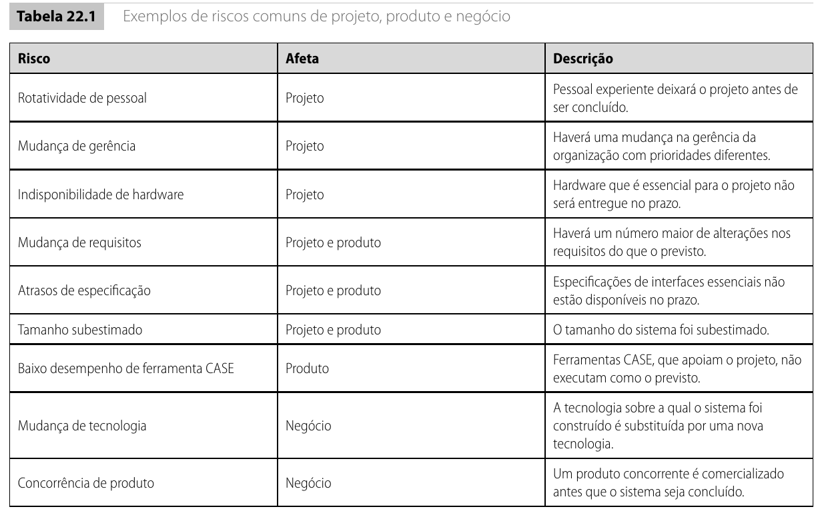
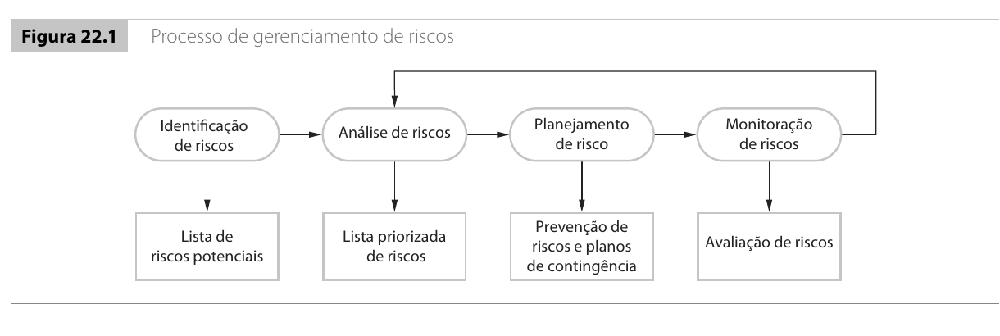
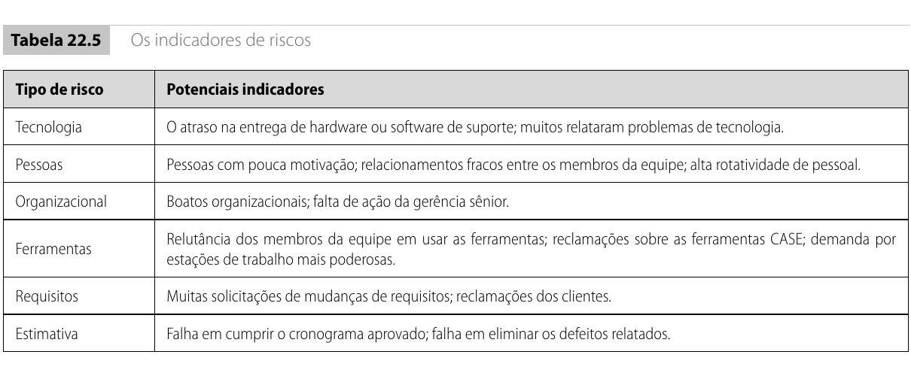

Introdução11.1
Hoje você vai estudar uma ideia simples, mas decisiva para qualquer projeto profissional de software: um problema previsto custa menos do que um problema descoberto tarde.
Na aula anterior, mergulhamos no planejamento de projetos. Vimos que planejar não é adivinhar o futuro, é reduzir a incerteza o suficiente para tomar decisões responsáveis. Estudamos como um plano organiza escopo, esforço, cronograma, recursos e entregas. Vimos que estimativas iniciais são frágeis, que cronogramas precisam de contingência, que tarefas têm dependências e que o plano deve ser revisado conforme a equipe aprende. Também estudamos a diferença entre custo e preço, a lógica do planejamento ágil e as limitações dos modelos de estimativa.
Em todos esses tópicos, uma pergunta apareceu várias vezes nas entrelinhas: e se algo der errado?
É exatamente essa pergunta que organiza a aula de hoje. Vamos estudar gerência de riscos: como identificar o que pode ameaçar um projeto, como avaliar a gravidade dessas ameaças, como planejar respostas antes que os problemas aconteçam e como monitorar sinais de perigo durante toda a execução.
Quando uma equipe monta um cronograma, estima esforço ou define marcos, ela está assumindo que algumas condições serão verdadeiras. Assume que os requisitos não mudarão demais. Assume que as pessoas certas estarão disponíveis. Assume que a tecnologia funcionará como esperado. Assume que o cliente responderá dúvidas no prazo. Assume que as integrações externas estarão prontas. Assume que o orçamento não será cortado.
O problema é que essas suposições podem falhar. E quando falham, o plano pode deixar de representar a realidade. Um risco é exatamente isso: um evento ou condição incerta que, se acontecer, pode afetar negativamente o projeto, o produto ou a organização. O risco ainda não é um problema real. Ele é uma possibilidade. Mas uma possibilidade ignorada pode virar crise.
Risco não é o mesmo que problema. Risco é algo que pode acontecer. Problema é algo que já aconteceu. A gerência de riscos tenta agir enquanto ainda há tempo para prevenir, reduzir ou preparar uma resposta. Depois que o problema se materializa, já não há mais o que gerenciar como risco, há o que resolver como incidente.
Pense em um exemplo cotidiano. Quando você sai de casa com guarda-chuva porque a previsão indica 70% de chance de chuva, você está gerenciando um risco. A chuva ainda não caiu. Você não tem certeza de que vai cair. Mas você decide carregar o guarda-chuva porque o impacto de se molhar antes de uma reunião importante justifica o incômodo de carregá-lo. Se você esperar a chuva começar para comprar um guarda-chuva, já estará molhado. O mesmo raciocínio vale para projetos de software: a hora de agir é antes da crise, não durante ela.
Por que projetos de software são especialmente arriscados?11.2
Projetos de software têm características que os tornam mais difíceis de controlar do que outros tipos de projeto. Entender essas características ajuda a perceber por que a gerência de riscos não é um luxo, é uma necessidade.
O trabalho é invisível. Em uma obra de engenharia civil, um gerente pode olhar para uma parede, uma fundação ou uma estrutura metálica e ter alguma noção de avanço. Em software, o progresso depende de decisões de projeto, código-fonte, testes automatizados, integrações, documentação, entendimento de domínio e aprendizado técnico, nada disso é visível para um observador externo. O gerente depende de relatos, demonstrações e evidências indiretas. Isso torna mais difícil perceber que um risco está se materializando.
Cada projeto grande tende a ser único. Diferente da construção civil, onde muitas técnicas são repetíveis, projetos de software frequentemente envolvem combinações novas de tecnologia, domínio, equipe e restrições. Um gerente experiente pode ter enfrentado situações parecidas, mas raramente idênticas. As lições do projeto anterior podem não se transferir diretamente.
Os processos de software variam entre organizações. Não existe um processo universal que funcione para qualquer empresa, qualquer equipe e qualquer produto. Mesmo dentro de uma mesma organização, projetos diferentes podem exigir abordagens diferentes. Essa variabilidade torna mais difícil prever quando um problema de processo vai gerar um risco real.
As mudanças tecnológicas são rápidas. Uma ferramenta que era padrão há dois anos pode estar obsoleta. Uma biblioteca pode ser descontinuada. Um serviço de plataforma pode mudar sua API. A experiência acumulada em uma tecnologia pode perder valor quando o projeto migra para outra.
Além dessas características estruturais, projetos de software enfrentam fontes persistentes de incerteza:
- Requisitos vagamente definidos desde o início, o cliente sabe que precisa de um sistema, mas não consegue descrever todas as regras, exceções e integrações.
- Mudanças de requisitos durante o desenvolvimento, o cliente descobre novas necessidades, o mercado muda, uma lei é alterada, um concorrente lança algo que força ajuste de escopo.
- Dificuldade de estimar tempo e recursos, como vimos na aula anterior, estimativas iniciais podem variar por um fator de 4× ou mais, porque a equipe ainda não conhece a arquitetura, os riscos reais e sua própria velocidade.
- Diferenças de habilidades individuais, duas pessoas com o mesmo cargo podem ter produtividade muito diferente em tipos diferentes de tarefa.
- Dependências externas, fornecedores, APIs, serviços de plataforma, homologações, aprovações regulatórias: tudo isso está fora do controle direto da equipe.
Você está gerenciando um projeto que depende de uma API de pagamento de terceiros. O fornecedor prometeu acesso ao ambiente de homologação em duas semanas. Já se passaram quatro semanas e o acesso não chegou. Isso era um risco ou já é um problema? O que deveria ter sido feito quando o risco foi identificado pela primeira vez?
Era um risco quando o projeto foi planejado. Agora é um problema. O que deveria ter sido feito: registrar o risco no plano, preparar uma alternativa (como simular a API com dados fictícios para não bloquear o desenvolvimento) e acompanhar o prazo do fornecedor desde o início.
Riscos de projeto, de produto e de negócio11.3
Uma forma útil de começar a organizar riscos é perguntar o que será afetado caso o risco se concretize. Essa pergunta separa os riscos em três categorias que se complementam.
| Tipo de risco | Afeta principalmente | Exemplo |
|---|---|---|
| Risco de projeto | Cronograma, custo, equipe ou recursos | Uma pessoa experiente sai do projeto no meio do desenvolvimento |
| Risco de produto | Qualidade, desempenho, segurança, confiabilidade ou usabilidade do software | Um componente de terceiros não suporta o volume de transações esperado |
| Risco de negócio | Objetivos comerciais, estratégicos ou institucionais da organização | Um concorrente lança um produto similar antes da entrega |
Essa separação é útil para raciocinar, mas não deve ser tratada como uma divisão rígida. Na prática, um mesmo evento frequentemente afeta mais de uma dimensão ao mesmo tempo, e entender essa sobreposição é parte do trabalho do gerente.
Imagine um sistema acadêmico sendo desenvolvido por uma equipe de cinco pessoas. Uma dessas pessoas é a única que entende profundamente a integração com o sistema de autenticação institucional. No meio do projeto, essa pessoa pede demissão.
Esse evento é um risco de projeto, porque o cronograma provavelmente vai atrasar. Encontrar um substituto leva tempo, e o substituto precisa aprender o que já foi feito antes de produzir. Também é um risco de produto, porque a pessoa substituta pode não ter a mesma familiaridade com os detalhes de segurança da autenticação, aumentando a chance de erros. E pode ser um risco de negócio, porque um atraso na entrega pode comprometer a confiança da instituição, afetar renovações de contrato ou prejudicar a reputação da empresa desenvolvedora.
Perceba que o mesmo evento, a saída de uma pessoa, muda de gravidade conforme o contexto. Se a equipe mantinha documentação atualizada, testes automatizados, revisões de código e sobreposição deliberada de conhecimento entre os membros, o impacto pode ser controlado. Se todo o conhecimento crítico estava concentrado em uma única pessoa, o impacto pode ser grave ou até catastrófico.

A tabela acima (Tabela 22.1 do livro) mostra riscos comuns que podem aparecer em qualquer projeto de software, independentemente do domínio ou da tecnologia. Observe a variedade: rotatividade de pessoal, mudança de gerência, indisponibilidade de hardware, alterações excessivas de requisitos, atrasos em especificações de interfaces, tamanho subestimado do sistema, ferramentas com baixo desempenho, mudança de tecnologia e concorrência de produto. Cada um desses riscos afeta uma combinação de projeto, produto e negócio.
Note que nenhum desses riscos é um defeito de código. São condições organizacionais, técnicas e de mercado que podem atrapalhar o projeto antes mesmo de uma linha específica falhar. Essa é uma distinção importante: um bug é um problema de qualidade. Um risco é uma condição que pode gerar bugs, atrasos, estouros de orçamento ou perda de valor do produto.
Considere uma empresa que está desenvolvendo um sistema de vendas on-line para o varejo. A Tabela 22.1 lista "concorrência de produto" como risco de negócio. O que isso significa na prática?
Imagine que a equipe estima seis meses para entregar a primeira versão funcional. No terceiro mês, um concorrente lança uma plataforma parecida, com funcionalidades que o sistema ainda não tem. De repente, o que era uma oportunidade de mercado vira uma corrida. O escopo original pode precisar mudar. Funcionalidades que estavam previstas para o segundo semestre podem precisar ser antecipadas. O cronograma pode ser comprimido, e, como vimos na aula anterior, comprimir cronograma aumenta esforço.
Se a equipe tivesse identificado "concorrência de produto" como risco desde o início, poderia ter planejado uma primeira entrega mais enxuta, mas com diferenciais claros, ou ter reservado contingência de cronograma para reagir a esse cenário. Sem isso, a equipe é pega de surpresa e precisa improvisar sob pressão.
O processo de gerência de riscos11.4
A gerência de riscos não é uma reunião isolada no início do projeto. Ela é um processo contínuo que acompanha o projeto do começo ao fim. A equipe identifica riscos, analisa sua importância, planeja respostas e monitora sinais de mudança, e depois recomeça, porque novos riscos podem surgir e riscos antigos podem mudar de gravidade.
O processo pode ser organizado em quatro atividades principais:
| Atividade | Pergunta que responde | Resultado que produz |
|---|---|---|
| Identificação de riscos | O que pode dar errado? | Lista de riscos potenciais |
| Análise de riscos | Qual é a probabilidade e qual seria o impacto? | Lista priorizada de riscos |
| Planejamento de riscos | O que faremos para evitar, reduzir ou reagir? | Estratégias de prevenção, minimização e planos de contingência |
| Monitoramento de riscos | O risco está mudando? Ficou mais provável ou mais grave? | Avaliação atualizada e decisões de resposta |
Essas quatro atividades formam um ciclo. Depois de monitorar, a equipe pode descobrir riscos que não existiam antes, reavaliar riscos que mudaram de probabilidade ou impacto, e ajustar suas estratégias.

A figura acima (Figura 22.1 do livro) mostra o fluxo. Observe com atenção a seta de retorno entre "Monitoração de riscos" e "Identificação de riscos". Ela é a parte mais importante do desenho. Significa que o processo não termina quando a lista inicial fica pronta. Durante o projeto, a equipe coleta informação nova sobre a tecnologia, o cliente, o mercado e sua própria capacidade, e essa informação pode revelar riscos que não eram visíveis no início.
O mesmo vale para a seta entre "Avaliação de riscos" (que aparece após o monitoramento) e as etapas anteriores. Se um risco que era moderado passa a ser alto, a equipe precisa rever o plano de resposta. Se um risco que era grave some porque a causa foi eliminada, a equipe pode redirecionar energia para outros riscos.
Um plano de riscos envelhece. Se ele for escrito no início do projeto e nunca mais revisado, passa a representar o que a equipe temia no passado, não o que realmente ameaça o projeto agora. Isso cria uma falsa sensação de controle. O documento existe, mas não serve para decidir.
Identificação de riscos11.5
Identificar riscos é produzir uma lista honesta e específica do que pode ameaçar o projeto. Essa atividade pode ser feita pelo gerente sozinho, mas costuma ser muito melhor quando envolve a equipe. Desenvolvedores, testadores, analistas, arquitetos, pessoas de operação e até representantes do cliente enxergam riscos diferentes, porque cada um lida com partes diferentes do problema.
Uma boa identificação de riscos evita dois extremos igualmente perigosos:
Otimismo excessivo. A equipe descreve apenas o cenário em que tudo funciona, todas as pessoas ficam, todas as tecnologias entregam o prometido e todos os prazos são cumpridos. Esse cenário é uma ficção perigosa, porque não prepara a equipe para o que provavelmente vai acontecer.
Generalidade excessiva. A equipe escreve riscos tão vagos que não ajudam a decidir nada. "Pode haver problemas técnicos" não é um risco gerenciável. "Atrasos podem ocorrer" não orienta nenhuma ação.
Compare dois estilos de registro:
| Registro vago (não ajuda) | Registro específico (permite agir) |
|---|---|
| Pode haver problemas técnicos. | A biblioteca de geração de PDF ainda não foi testada com o volume de relatórios que o cliente espera (500 páginas por lote). |
| O cliente pode atrasar. | A validação das regras de matrícula especial depende de reunião com a pró-reitoria, que se reúne apenas uma vez por mês. Se a pauta de abril for perdida, a validação atrasa 30 dias. |
| O sistema pode ficar lento. | A consulta de histórico escolar carrega disciplinas, equivalências, dispensas e pendências em uma única requisição. Com 50 mil alunos, o tempo de resposta pode ultrapassar 5 segundos. |
| Pode faltar gente. | A única pessoa que entende o barramento de integração com sistemas legados está de férias nas semanas 6 e 7, exatamente quando a integração está planejada. |
O segundo tipo de registro é mais útil porque é acionável. Quando o risco é específico, a equipe pode pensar em ações concretas: fazer uma prova de conceito, agendar uma reunião com antecedência, executar um teste de carga, treinar uma segunda pessoa, simplificar o escopo da entrega ou preparar um plano alternativo.
Categorias para guiar a identificação11.5.1
Uma técnica prática para não esquecer áreas importantes durante a identificação é usar categorias como um roteiro de perguntas. Em vez de perguntar "existem riscos?" de forma genérica, a equipe percorre cada categoria e faz perguntas específicas.
| Categoria | O que procurar | Exemplos de perguntas |
|---|---|---|
| Tecnologia | Riscos ligados ao hardware, software, bancos de dados, linguagens e plataformas usados | O banco de dados suporta o volume de transações esperado? A linguagem tem bibliotecas maduras para o que precisamos? Há dependência de tecnologia muito nova ou pouco documentada? |
| Pessoas | Riscos ligados à equipe de desenvolvimento | Temos as habilidades necessárias? O conhecimento crítico está concentrado em uma só pessoa? Há risco de saída de pessoas-chave? A equipe está motivada? |
| Organizacionais | Riscos ligados ao ambiente da organização | O orçamento está garantido? A prioridade do projeto pode mudar com troca de gestão? Há disputa entre setores que afete o projeto? |
| Ferramentas | Riscos ligados ao ambiente de desenvolvimento | As ferramentas funcionam bem integradas? O ambiente de build é estável? Há risco de incompatibilidade entre versões? |
| Requisitos | Riscos ligados à definição e mudança do escopo | Os requisitos estão claros e validados? O cliente entende o impacto de mudanças? Há regras de negócio não documentadas que só aparecerão durante o desenvolvimento? |
| Estimativas | Riscos ligados a prazos, esforço e recursos | O tamanho do sistema foi subestimado? O cronograma depende de suposições otimistas? A complexidade de integração foi considerada? |
Uma equipe vai construir um módulo de matrícula on-line para uma universidade. Usando as seis categorias, a equipe levanta os seguintes riscos:
Tecnologia. O sistema de autenticação institucional usa um protocolo antigo (SAML 1.0) que a equipe nunca integrou. Ninguém sabe quanto tempo levará. Além disso, o serviço de boletos bancários tem histórico de instabilidade em períodos de pico de matrícula.
Pessoas. Apenas uma pessoa da equipe conhece as regras de pré-requisito, equivalência e co-requisito. Se essa pessoa sair ou adoecer, o conhecimento some. Dois desenvolvedores estão terminando a graduação e podem sair antes do fim do projeto.
Organizacionais. A coordenação do curso planeja mudar o calendário acadêmico no próximo semestre. Se a mudança for aprovada, as datas de matrícula mudam. Também há discussão sobre unificar o sistema acadêmico de três campi. Se isso acontecer, o escopo dobra.
Ferramentas. O ambiente de homologação depende de um servidor que é compartilhado com outro projeto e fica indisponível com frequência.
Requisitos. As regras de matrícula especial (alunos com deficiência, atletas, intercambistas) nunca foram formalizadas. A equipe depende de entrevistas informais com a secretaria. O cliente mencionou "relatórios gerenciais", mas ninguém especificou quais relatórios, com quais filtros e em qual formato.
Estimativas. A equipe estimou "cadastro de disciplinas" como uma tarefa simples, mas cada disciplina tem pré-requisitos, co-requisitos, equivalências, turmas, horários, vagas e docentes vinculados. O cronograma assume que a migração de dados históricos levará uma semana, mas ninguém olhou a base atual para ver inconsistências.
Observe como a lista é longa, 12 riscos potenciais. Isso é normal. A identificação inicial deve ser abrangente. Depois, a análise vai filtrar e priorizar.
De onde vêm os riscos mais comuns?11.5.2
Além de usar categorias, ajuda conhecer riscos que aparecem com frequência em projetos de software, independentemente do domínio. A Tabela 22.1, que já vimos, lista oito riscos comuns. Vale a pena comentar cada um, porque entender o padrão ajuda a reconhecê-lo quando ele surgir no seu projeto.
Rotatividade de pessoal. Pessoas saem de projetos por motivos pessoais, profissionais ou organizacionais. Quando a pessoa que sai detém conhecimento crítico não documentado, o impacto vai além do atraso na substituição, a equipe perde contexto, decisões de projeto e entendimento tácito do domínio.
Mudança de gerência. Um novo gestor pode trazer prioridades diferentes, mudar a alocação de recursos, questionar decisões anteriores ou redirecionar o orçamento. Isso afeta principalmente o cronograma, mas também pode afetar o escopo e a moral da equipe.
Indisponibilidade de hardware. Se o projeto depende de equipamento específico (servidores, dispositivos embarcados, terminais) e esse equipamento atrasa, tarefas inteiras podem ficar bloqueadas.
Mudanças de requisitos. Este talvez seja o risco mais frequente em software. O cliente descobre novas necessidades, o mercado muda, uma lei é publicada. Se o processo não tiver um mecanismo para avaliar impacto antes de aceitar mudanças, o escopo cresce sem controle.
Atrasos de especificação. Se o sistema depende de interfaces externas (APIs, protocolos, formatos de dados) e essas especificações atrasam, a equipe pode precisar trabalhar com suposições ou interromper o desenvolvimento.
Tamanho subestimado. A equipe acha que o sistema é menor do que realmente é. Isso é comum quando o domínio é novo para a equipe ou quando os requisitos estão incompletos.
Baixo desempenho de ferramenta CASE. Ferramentas que prometem gerar código, modelos ou documentação podem não entregar a produtividade esperada, especialmente em contextos diferentes daqueles para os quais foram projetadas.
Mudança de tecnologia. Uma tecnologia nova substitui a que estava sendo usada, tornando obsoleta parte do trabalho já feito ou exigindo migração.
Concorrência de produto. Um concorrente lança algo similar antes, mudando as expectativas do mercado e do cliente.
Da lista à análise: probabilidade e impacto11.6
Depois de identificar riscos, a equipe normalmente terá uma lista com dezenas de itens. Tratar todos como igualmente importantes é um erro. Alguns riscos são muito prováveis mas pouco graves. Outros são remotíssimos mas teriam consequências catastróficas. Outros são moderados em ambas as dimensões.
A função da análise de riscos é classificar essa lista para que a equipe concentre energia no que realmente merece atenção.
As duas perguntas da análise11.6.1
Para cada risco, a equipe precisa responder duas perguntas:
- Probabilidade: qual é a chance de esse risco se concretizar?
- Impacto: se ele se concretizar, qual será a consequência?
Em projetos reais, raramente temos números exatos. Não sabemos dizer "a probabilidade é 34%". Por isso, é comum usar faixas qualitativas que orientam a decisão sem fingir precisão.
| Probabilidade | O que significa |
|---|---|
| Muito baixa (menos de 10%) | É improvável, mas não impossível. Nenhum sinal concreto sugere que vá acontecer. |
| Baixa (10% a 25%) | Pode acontecer, mas não há evidências fortes no momento. |
| Moderada (25% a 50%) | Há chance real. Existem alguns sinais de atenção. |
| Alta (50% a 75%) | Há bons motivos para acreditar que vai acontecer se nada for feito. |
| Muito alta (mais de 75%) | É provável que aconteça. Os sinais são claros e persistentes. |
| Impacto | O que significa |
|---|---|
| Insignificante | Efeito pequeno, absorvido pela rotina da equipe sem afetar entregas. |
| Tolerável | Causa algum incômodo ou atraso pequeno, mas cabe dentro da margem de contingência do plano. |
| Grave | Causa atraso relevante, retrabalho significativo ou perda de qualidade que afeta o cliente. |
| Catastrófico | Ameaça a entrega do projeto, a viabilidade do contrato, a saúde financeira da organização ou a continuidade do negócio. |
Com essas duas dimensões avaliadas para cada risco, a equipe pode priorizar.
A matriz de riscos11.6.2
A matriz de riscos (ou matriz de probabilidade e impacto) é uma ferramenta visual simples que cruza as duas dimensões e atribui um nível de prioridade a cada combinação.
| Impacto / Probabilidade | Baixa | Moderada | Alta |
|---|---|---|---|
| Catastrófico | Alto | Crítico | Crítico |
| Grave | Médio | Alto | Crítico |
| Tolerável | Baixo | Médio | Alto |
| Insignificante | Baixo | Baixo | Médio |
A leitura da matriz é direta. Um risco de probabilidade alta e impacto catastrófico é crítico: exige resposta imediata e explícita. Um risco de probabilidade moderada e impacto grave é alto: deve ser planejado com cuidado e monitorado de perto. Um risco tolerável com probabilidade baixa é baixo: pode ser registrado, mas não deve consumir energia desproporcional.
A matriz não é uma fórmula matemática. Ela é uma ferramenta de conversa. Ajuda a equipe a discutir prioridade com mais clareza, em vez de tratar todos os riscos como se tivessem o mesmo peso.
O que acontece quando uma equipe classifica todos os riscos como "Alto" ou "Crítico"? A matriz ainda serve para alguma coisa?
A matriz não substitui julgamento. Um risco de baixa probabilidade e impacto catastrófico pode merecer atenção mesmo parecendo distante, especialmente em sistemas críticos (saúde, financeiro, infraestrutura, aviação), em contratos com multas pesadas ou em projetos com margem de atraso muito pequena. A decisão final é do gerente, não da matriz.
Exemplo completo de análise11.6.3
Vamos aplicar a análise a um conjunto de riscos realistas. Imagine que a equipe identificou os seguintes riscos para um sistema de atendimento ao cidadão (agendamento de serviços, protocolo digital, consulta de processos):
| # | Risco | Probabilidade | Impacto | Prioridade |
|---|---|---|---|---|
| R1 | O serviço de login único do governo fica indisponível com frequência, atrasando testes de integração | Alta | Grave | Crítico |
| R2 | O banco de dados atual não suporta o pico de consultas no dia seguinte à abertura de vagas | Moderada | Catastrófico | Crítico |
| R3 | A equipe não conhece a API de protocolo externo e a documentação está desatualizada | Moderada | Grave | Alto |
| R4 | Os requisitos de relatórios gerenciais não foram validados com os diretores | Moderada | Tolerável | Médio |
| R5 | O fornecedor de hospedagem pode reajustar o preço no meio do contrato | Baixa | Tolerável | Baixo |
| R6 | A ferramenta de geração de relatórios em PDF não suporta alguns layouts exigidos | Moderada | Tolerável | Médio |
| R7 | Duas pessoas da equipe estão terminando a faculdade e podem sair no meio do projeto | Moderada | Grave | Alto |
| R8 | O orçamento do projeto depende de uma emenda parlamentar que ainda não foi aprovada | Baixa | Catastrófico | Alto |
Agora a equipe consegue decidir com clareza. R1 (login instável) e R2 (banco não suporta pico) são críticos, precisam de ação imediata. R3 (API desconhecida), R7 (pessoas podem sair) e R8 (orçamento incerto) são altos, exigem plano de resposta. R4 (relatórios não validados) e R6 (ferramenta de PDF limitada) são médios, basta monitorar e ter uma alternativa em mente. R5 (reajuste de hospedagem) é baixo, registre e siga em frente.
Observe que R8 tem probabilidade baixa mas impacto catastrófico, e por isso foi classificado como Alto, não como Baixo ou Médio. Isso ilustra exatamente o alerta anterior: impacto catastrófico merece atenção mesmo quando a probabilidade é baixa. Se a emenda não for aprovada, o projeto simplesmente para. Esse risco não pode ser ignorado.
Por que R2 (banco de dados não suporta pico) é crítico mesmo tendo probabilidade apenas moderada?
Porque o impacto é catastrófico. Se o sistema cair no dia seguinte à abertura de vagas, o momento de maior uso, a credibilidade do projeto desaba, o cidadão fica sem atendimento e a secretaria pode cancelar o contrato. Um impacto catastrófico com probabilidade moderada ainda é crítico. A matriz mostra isso: a célula (Catastrófico, Moderada) é "Crítico".
Planejamento de respostas11.7
Analisar riscos sem planejar o que fazer a respeito transforma a análise em uma lista de preocupações. O próximo passo é decidir como agir. Para cada risco que merece atenção (crítico ou alto), a equipe precisa definir uma estratégia.
As estratégias de resposta se dividem em três categorias, que podem ser combinadas para o mesmo risco:
| Estratégia | Ideia central | Quando usar |
|---|---|---|
| Prevenção | Reduzir a probabilidade de o risco acontecer | Quando há ações concretas que tornam o risco menos provável |
| Minimização | Reduzir o impacto caso o risco aconteça | Quando não é possível eliminar a probabilidade, mas é possível limitar o dano |
| Contingência | Ter um plano pronto para reagir se o risco se materializar | Quando o risco não pode ser evitado nem seu impacto totalmente reduzido |
Essas estratégias não são excludentes. Para um mesmo risco, a equipe pode combinar ações de prevenção (tornar menos provável), minimização (tornar menos doloroso se acontecer) e contingência (saber o que fazer se acontecer mesmo assim).
Retome o risco R1 do exemplo anterior: o serviço de login único do governo fica indisponível com frequência.
Prevenção: agendar uma reunião técnica com a equipe de infraestrutura do governo para entender os períodos de instabilidade e negociar um ambiente de testes dedicado. Isso reduz a probabilidade de ficar sem serviço durante os testes.
Minimização: desenvolver um simulador do serviço de login que permita à equipe continuar testando o restante do sistema mesmo quando o serviço real está fora do ar. Isso reduz o impacto: se o serviço cair, o desenvolvimento não para completamente.
Contingência: se o serviço real estiver indisponível na semana da homologação final, o plano é executar a homologação com o simulador e agendar uma janela extra de testes com o serviço real na semana seguinte. A equipe já tem o ambiente preparado, o roteiro de testes e a aprovação do cliente para esse plano B.
Observe que a contingência não é improviso. É uma resposta pensada, documentada e acordada antes da crise.
Agora considere o risco R7: duas pessoas estão terminando a faculdade e podem sair.
Prevenção: conversar com as duas pessoas para entender seus planos e, se possível, oferecer condições que as mantenham no projeto (flexibilidade de horário, contrato renovado, participação em decisões técnicas). Isso pode reduzir a probabilidade de saída.
Minimização: garantir que o conhecimento delas não fique concentrado. Colocar uma terceira pessoa para acompanhar o trabalho, revisar código, participar das reuniões técnicas e documentar decisões. Se elas saírem, o impacto é menor porque o conhecimento já está distribuído.
Contingência: identificar antecipadamente pelo menos um profissional no mercado que poderia substituir cada uma delas, com contato prévio e estimativa de custo e prazo de contratação.
Considere o risco R4 (relatórios gerenciais não validados) e R6 (ferramenta de PDF limitada). Esses riscos são médios, não críticos nem altos. Isso significa que não exigem um plano pesado, mas também não devem ser ignorados.
Para R4, a ação pode ser simples: agendar uma reunião de 30 minutos com um diretor para mostrar formatos possíveis e confirmar os relatórios essenciais. Isso reduz a incerteza com pouco esforço.
Para R6, a ação pode ser: manter uma lista de duas ferramentas alternativas de geração de PDF, com estimativa de esforço de troca, caso a ferramenta atual se mostre limitada. Isso é um plano de contingência leve.
Estratégias comuns para riscos frequentes11.7.1
O livro de Sommerville apresenta uma tabela (Tabela 22.4) com estratégias sugeridas para os riscos mais comuns. A tabela abaixo resume e comenta essas estratégias.
| Risco | Estratégia sugerida | Tipo de estratégia |
|---|---|---|
| Problemas financeiros organizacionais (corte de orçamento) | Preparar documento mostrando a contribuição do projeto para os objetivos estratégicos da organização | Prevenção (tenta evitar o corte) |
| Dificuldade de recrutar pessoal | Alertar o cliente sobre possíveis atrasos, investigar compra de componentes prontos para reduzir a necessidade de desenvolvimento | Minimização + Contingência |
| Doença ou ausência de pessoal-chave | Reorganizar a equipe para aumentar a sobreposição de conhecimento entre as pessoas | Minimização |
| Componentes reusáveis com defeitos | Substituir por componentes de fornecedores com confiabilidade comprovada | Prevenção |
| Mudanças excessivas de requisitos | Manter rastreabilidade entre requisitos e componentes, maximizar ocultamento de informação no projeto | Minimização |
| Reestruturação organizacional | Preparar documento mostrando a importância do projeto para os objetivos de negócio | Prevenção |
| Desempenho de banco de dados abaixo do esperado | Investigar a possibilidade de comprar um banco de dados de maior desempenho | Prevenção + Contingência |
| Prazo de desenvolvimento subestimado | Investigar compra de componentes prontos, investigar uso de geradores de código | Contingência |
Observe um padrão importante: várias estratégias envolvem comunicação com a alta gerência. Isso revela algo que nem sempre é óbvio para desenvolvedores: uma parte significativa da gerência de riscos não é técnica, é política e organizacional. O gerente de projeto precisa defender o projeto dentro da organização, mostrar seu valor, alertar sobre riscos e negociar condições.
As três categorias em perspectiva11.7.2
Vale a pena fixar a diferença entre as três categorias com uma analogia simples.
Pense em um motorista dirigindo em uma estrada com previsão de tempestade.
Prevenção: sair mais cedo, antes da tempestade. (Reduz a probabilidade de enfrentá-la.)
Minimização: revisar os pneus, colocar correntes, verificar os freios. (Se a tempestade chegar, o carro está mais preparado. Reduz o impacto.)
Contingência: saber onde ficam os postos de parada ao longo da estrada, ter o número do guincho, levar um cobertor. (Se a tempestade for forte demais, você sabe o que fazer. Resposta preparada.)
Nenhuma dessas ações garante que a viagem será tranquila. Mas juntas, elas aumentam muito a chance de chegar ao destino, e, se algo der errado, o dano será menor e a recuperação mais rápida.
Monitoramento de riscos11.8
Monitorar riscos significa observar, durante todo o projeto, sinais de que a probabilidade ou o impacto de um risco está mudando. Essa é a atividade que fecha o ciclo e alimenta a próxima iteração do processo.
Um erro comum, e grave, é registrar riscos no plano inicial e nunca mais olhar para eles. Isso cria uma falsa sensação de controle. O gerente acha que está gerenciando riscos porque tem uma planilha, mas a planilha está desatualizada. Enquanto isso, riscos que eram baixos se tornaram altos, riscos novos surgiram e riscos antigos desapareceram. A planilha parou no tempo, mas o projeto continuou andando.
Indicadores: os sinais de alerta11.8.1
Cada tipo de risco tem indicadores, sinais observáveis que sugerem que o risco está ficando mais provável ou mais grave. A Tabela 22.5 do livro, reproduzida na figura abaixo, organiza esses indicadores por categoria.

Indicadores são pistas, não provas. O fato de a equipe relatar "muitos problemas com determinada tecnologia" não significa que o sistema vai falhar, mas significa que o risco de tecnologia deve ser reavaliado. O fato de haver "muitas solicitações de mudança de requisitos" não prova que o escopo saiu do controle, mas acende um alerta.
| Tipo de risco | Sinal de alerta (indicador) | O que fazer quando o sinal aparece |
|---|---|---|
| Tecnologia | Muitos problemas relatados com uma biblioteca ou plataforma, atraso na entrega de hardware ou software de suporte | Investigar alternativas, fazer prova de conceito, reavaliar a viabilidade técnica |
| Pessoas | Baixa motivação, conflitos entre membros, saída de pessoas, pessoas-chave ausentes em momentos críticos | Conversar com a equipe, redistribuir conhecimento, investigar causas da desmotivação |
| Organizacional | Rumores de reestruturação, falta de ação ou comunicação da alta gerência, orçamento sendo questionado | Comunicar o valor do projeto, preparar justificativas, antecipar cenários de corte |
| Ferramentas | Relutância da equipe em usar ferramentas, reclamações sobre desempenho, demanda por máquinas mais potentes | Avaliar se as ferramentas são adequadas, considerar substituição ou treinamento |
| Requisitos | Aumento de solicitações de mudança, reclamações de clientes sobre o que foi entregue, decisões de escopo pendentes há semanas | Revisar o processo de controle de mudanças, priorizar com o cliente, congelar uma baseline |
| Estimativa | Tarefas simples atrasando repetidamente, defeitos reabertos várias vezes, velocidade da equipe abaixo da esperada | Revisar estimativas, investigar causas dos atrasos, ajustar cronograma e comunicar |
Imagine uma reunião mensal de acompanhamento de riscos em um projeto de sistema de gestão de clínicas. A equipe revisa os riscos identificados no início do projeto:
Risco: rotatividade de pessoal (probabilidade original: baixa).
Indicadores observados neste mês: um desenvolvedor sênior mencionou que está insatisfeito com a carga de trabalho, outro recebeu uma proposta de outra empresa, o clima na equipe está mais tenso do que no mês anterior.
Reavaliação: a probabilidade sobe de baixa para moderada.
Ação: o gerente agenda conversas individuais, revisa a distribuição de tarefas e começa a documentar conhecimento crítico que estava concentrado.
Risco: mudanças de requisitos (probabilidade original: moderada).
Indicadores observados: nas últimas duas semanas, o cliente solicitou sete alterações em funcionalidades já implementadas, três dessas alterações afetam a mesma tela de prontuário médico.
Reavaliação: o impacto sobe de tolerável para grave, porque as mudanças estão gerando retrabalho em cascata.
Ação: o gerente propõe congelar a baseline atual e agrupar as mudanças para uma versão seguinte, em vez de aplicar cada alteração isoladamente.
Risco: ferramentas de geração de relatórios (probabilidade original: moderada).
Indicadores observados: a equipe de front-end não relatou problemas e conseguiu gerar todos os relatórios pedidos até agora.
Reavaliação: a probabilidade cai de moderada para baixa.
Ação: nenhuma ação nova, o risco continua registrado, mas deixa de consumir atenção mensal.
Esse exemplo mostra o ciclo completo de monitoramento aplicado a três riscos. Um risco piorou (pessoas), um ficou mais grave (requisitos), um melhorou (ferramentas). A reunião produziu decisões diferentes para cada caso.
O monitoramento deve produzir decisão11.8.2
O propósito do monitoramento não é preencher relatórios. É produzir decisão. Se um risco crítico está piorando, o gerente deve agir, não apenas registrar o fato na ata. As ações podem incluir renegociar escopo ou prazo com o cliente, antecipar uma validação técnica que estava prevista para depois, mudar a alocação de pessoas para reforçar uma área ou treinar alguém, criar uma prova de conceito para reduzir incerteza, dividir uma entrega grande em entregas menores para isolar o risco, acionar um plano de contingência já preparado, ou rever o cronograma para refletir a nova realidade.
Se a reunião de riscos termina com todo mundo concordando que "os riscos estão estáveis", mas ninguém tomou nenhuma decisão, provavelmente a reunião foi apenas um ritual.
Riscos e o planejamento do projeto11.9
Na aula anterior, estudamos que cronogramas e planos precisam ser monitoráveis. A gerência de riscos reforça e aprofunda essa ideia. Um cronograma que não reconhece riscos importantes pode parecer limpo e organizado, mas é frágil, ele descreve o que a equipe fará se tudo der certo, não o que fará quando algo der errado.
Considere duas formas de planejar a mesma entrega:
| Planejamento frágil (ignora riscos) | Planejamento que reconhece riscos |
|---|---|
| "Implementar integração de pagamento na semana 8" | "Validar API de pagamento com sandbox na semana 2, implementar fluxo completo entre semanas 5 e 8, se a homologação atrasar, entregar versão com checkout e pagamento manual" |
| "Fazer relatórios no último mês" | "Validar consultas mais pesadas na semana 4, antes de fechar o modelo de dados, se o desempenho for ruim, limitar o escopo dos relatórios da primeira versão" |
| "Uma pessoa cuida da autenticação" | "Duas pessoas acompanham a autenticação desde o início, a segunda pessoa documenta decisões e faz revisão de código, se a primeira pessoa sair, a segunda assume com atraso controlado" |
| "Cliente aprova tudo na entrega final" | "Cliente valida protótipos a cada duas semanas e aprova regras críticas antes da implementação, se houver divergência, ela é descoberta cedo" |
A segunda coluna não elimina riscos. Nenhum plano elimina riscos completamente. Mas a segunda coluna torna os riscos visíveis e gerenciáveis. A equipe sabe quais são as dependências frágeis, tem alternativas preparadas e consegue reagir antes que o atraso se torne irreversível.
Essa é uma das funções mais importantes da gerência de projeto: trocar surpresa tardia por aprendizado antecipado. Quando um gerente diz "estamos atrasados, mas já tínhamos previsto esse risco e temos um plano B", a situação é muito diferente de "estamos atrasados e não sabemos o que fazer".
O custo de ignorar riscos11.9.1
Ignorar riscos não torna o projeto mais ágil. Apenas empurra decisões difíceis para um momento em que a equipe terá menos tempo, menos margem de manobra e menos opções.
| Abordagem | O que acontece na prática |
|---|---|
| Ignorar riscos | A equipe descobre problemas quando eles já aconteceram. Precisa improvisar sob pressão. O cliente é pego de surpresa. A confiança cai. O custo de correção é alto. |
| Gerenciar riscos | A equipe antecipa cenários, prepara respostas e monitora sinais. Quando algo dá errado, já existe um plano. O cliente é informado com antecedência. A confiança se mantém. |
Em projetos de software, a diferença entre esses dois cenários frequentemente determina se um projeto será lembrado como sucesso ou como fracasso, mesmo que a qualidade técnica do código seja a mesma.
Riscos em projetos ágeis11.10
Métodos ágeis não eliminam a necessidade de gerência de riscos, eles mudam a forma como ela é praticada. Em vez de uma análise formal registrada em um documento extenso, equipes ágeis frequentemente tratam riscos de forma mais orgânica.
No Scrum, por exemplo, alguns riscos são identificados e discutidos:
- Na planning da sprint, quando a equipe avalia se consegue entregar as histórias selecionadas. Se há incerteza técnica em uma história, isso aparece na discussão de estimativa.
- Na daily, quando impedimentos são relatados. Um impedimento que persiste por vários dias pode ser um sinal de que um risco está se materializando.
- Na retrospectiva, quando a equipe discute o que deu errado e o que pode ser melhorado. Vários itens de melhoria são, na prática, estratégias de prevenção ou minimização de riscos para a próxima sprint.
- Na refinement, quando histórias são detalhadas e a equipe percebe complexidade, dependências ou falta de informação que representam riscos.
Mesmo em contextos ágeis, riscos estratégicos (orçamento, contrato, pessoas-chave, mudanças de mercado) geralmente precisam de atenção explícita. Uma daily de 15 minutos não substitui uma conversa franca sobre o risco de o projeto perder o patrocinador ou de o principal cliente mudar de ideia sobre o escopo.
A ferramenta (matriz, planilha, ata, quadro visual) é menos importante que a disciplina de olhar para os riscos regularmente e tomar decisões a partir do que se vê. Um post-it no quadro da equipe pode ser tão útil quanto uma planilha sofisticada, desde que seja olhado e gere ação.
A diferença entre uma equipe que sofre uma crise e uma equipe que enfrenta uma crise está no preparo. Um risco identificado cedo permite conversar com o cliente, ajustar o plano e preparar alternativas. Um risco ignorado só aparece quando já virou problema, e aí as opções são poucas, caras e dolorosas.
Exercício guiado11.11
Considere o seguinte projeto:
Uma equipe de quatro pessoas deve desenvolver um sistema de agendamento de consultas para uma clínica médica de médio porte. O sistema terá cadastro de pacientes (dados pessoais, convênio, histórico simples), agenda de médicos (horários, especialidades, bloqueios de férias), agendamento com verificação de conflitos de horário, confirmação de consulta por mensagem (WhatsApp e e-mail), controle de faltas e reagendamento, relatórios administrativos (consultas por período, por médico, taxa de falta) e integração com um serviço externo de pagamento (convênios e particulares). O prazo de entrega é de 4 meses.
A equipe é júnior (média de 2 anos de experiência) e ninguém trabalhou antes com integração de pagamento nem com envio de mensagens via WhatsApp Business API.
Etapa 1: Identificação
Preencha a tabela abaixo com pelo menos um risco por categoria. Seja específico: em vez de "problemas técnicos", descreva exatamente o que pode dar errado.
| Categoria | Risco identificado |
|---|---|
| Tecnologia | A equipe nunca integrou WhatsApp Business API. A documentação muda com frequência e a aprovação do número comercial (Business Verification) pode levar semanas, bloqueando os testes de envio. |
| Pessoas | Com apenas 4 pessoas juniores, se uma sair ou adoecer por período prolongado, 25% da capacidade desaparece. Nenhuma pessoa domina integração de pagamentos, então a equipe depende de aprendizado durante o projeto. |
| Organizacional | A clínica pode mudar de ideia sobre quais convênios aceitar no meio do projeto, forçando alteração no módulo de pagamento já implementado. |
| Ferramentas | O ambiente de sandbox da API de pagamento pode ter comportamento diferente do ambiente de produção (timeouts simulados, respostas fictícias), mascarando bugs que só aparecerão com dados reais. |
| Requisitos | As regras de reagendamento e multa por falta não foram formalizadas pela clínica. Cada médico pode ter uma política diferente, e a equipe só descobrirá essas diferenças durante as entrevistas. |
| Estimativas | A equipe estimou "confirmação por WhatsApp" como uma tarefa simples, mas ignorou o fluxo completo: template de mensagem precisa ser aprovado pelo Meta, webhook de resposta precisa tratar falha de envio, e uma fila de retentativa precisa ser implementada para mensagens não entregues. |
Etapa 2: Análise
Escolha os três riscos mais importantes da sua lista. Para cada um, atribua probabilidade, impacto e prioridade usando os critérios da matriz de riscos.
| Risco | Probabilidade | Impacto | Prioridade |
|---|---|---|---|
| A integração com WhatsApp Business API atrasa porque a equipe nunca usou a plataforma e o processo de aprovação é externo | Alta | Grave | Crítico |
| A integração com pagamento gera retrabalho porque a equipe não conhece o domínio e a lógica de convênios é mais complexa do que parecia | Moderada | Grave | Alto |
| As regras de reagendamento, falta e multa não foram formalizadas e cada médico segue uma política diferente | Moderada | Grave | Alto |
Etapa 3: Planejamento de respostas
Para cada um dos três riscos, proponha pelo menos uma ação de prevenção, minimização ou contingência.
| Risco | Estratégia | Ação concreta |
|---|---|---|
| WhatsApp Business API | Prevenção | Iniciar o cadastro Business Verification na semana 1, antes mesmo de implementar qualquer envio de mensagem. |
| WhatsApp Business API | Minimização | Implementar confirmação por e-mail como canal reserva, usando a mesma lógica de agendamento, para que o sistema funcione mesmo sem o WhatsApp aprovado. |
| WhatsApp Business API | Contingência | Se a aprovação do Meta não sair até a semana 6, entregar a primeira versão com confirmação por e-mail e SMS, e agendar a migração para WhatsApp na segunda versão. |
| Integração de pagamento | Prevenção | Reservar as duas primeiras semanas para estudo dirigido da documentação do gateway e prova de conceito com sandbox, antes de comprometer qualquer prazo. |
| Integração de pagamento | Minimização | Projetar o módulo de pagamento com uma interface bem definida e isolada do restante do sistema, para que trocar de gateway ou adiar a integração tenha baixo impacto. |
| Integração de pagamento | Contingência | Se a integração real não estiver estável na semana 10, entregar com registro manual de pagamento (valor, data, convênio), permitindo que a clínica opere enquanto a integração é concluída. |
| Regras de reagendamento não formalizadas | Prevenção | Agendar na semana 1 uma reunião com todos os médicos para levantar as políticas reais de falta, multa e reagendamento, consolidando em um documento único. |
| Regras de reagendamento não formalizadas | Minimização | Implementar as regras como parâmetros configuráveis por médico (tempo de antecedência, valor da multa, limite de remarcações), em vez de codificar valores fixos. |
Etapa 4: Monitoramento
Para cada um dos três riscos, que indicador(es) você observaria nas reuniões semanais de acompanhamento?
| Risco | Indicadores para monitorar |
|---|---|
| WhatsApp Business API | Status do Business Verification no portal Meta, data de submissão e previsão de resposta, número de mensagens de teste enviadas com sucesso, tempo médio de entrega no sandbox. |
| Integração de pagamento | Tempo gasto pela equipe estudando documentação (horas registradas), número de bugs abertos no módulo de pagamento, diferenças de comportamento entre sandbox e produção, complexidade real dos convênios mapeada. |
| Regras de reagendamento não formalizadas | Número de exceções e políticas diferentes descobertas a cada entrevista, quantidade de e-mails da clínica pedindo ajustes em regras já implementadas, data em que o documento consolidado de regras foi formalizado e assinado pelos médicos. |
Perguntas para discussão:
- Qual desses riscos você trataria primeiro? Por quê?
- Existe algum risco que poderia ser apenas monitorado, sem ação imediata?
- Que informação adicional você gostaria de ter para reduzir a incerteza de algum desses riscos?
- Se o prazo fosse reduzido de 4 para 3 meses, como sua análise de riscos mudaria?
1. Qual risco tratar primeiro? A integração com WhatsApp Business API. Motivo: é o risco com maior incerteza técnica (equipe sem experiência nenhuma), depende de aprovação externa (Meta) fora do controle da equipe, e afeta diretamente uma funcionalidade visível para o paciente final. Se a aprovação atrasar, o tempo de reação é curto e o impacto no cronograma é alto. Começar a tratá-lo na semana 1 maximiza a janela de resposta.
2. Existe risco que pode ser apenas monitorado? Sim. O risco de "ferramentas com comportamento diferente entre sandbox e produção" (categoria Ferramentas) pode ser apenas monitorado no início, porque o impacto só aparece quando os testes de integração estiverem avançados. Basta registrar o risco e começar a observá-lo a partir da semana 6. O risco de "mudança de preço de hospedagem" (categoria Organizacional, se identificado) também é de baixa prioridade para um projeto de 4 meses com equipe interna.
3. Que informação reduziria a incerteza? Para o risco do WhatsApp: saber o prazo médio real de aprovação do Business Verification para contas brasileiras (perguntar em fóruns, comunidades ou diretamente ao suporte Meta). Para o risco de pagamento: testar pelo menos dois gateways diferentes na semana 1 e comparar documentação, suporte e complexidade de integração, para escolher o mais adequado antes de comprometer a arquitetura. Para o risco de requisitos: entrevistar a recepcionista mais antiga da clínica. Ela provavelmente conhece todas as exceções e políticas informais que os médicos não documentaram.
4. Se o prazo cair para 3 meses, como a análise muda? Todos os riscos sobem de prioridade. O risco do WhatsApp, que já era crítico, continua crítico mas com margem de reação menor. A contingência (confirmação por e-mail) deixa de ser plano B e se torna o plano A provável para a primeira entrega. O risco de pagamento sobe de Alto para Crítico, porque não haverá tempo de aprendizado. A equipe precisará escolher um gateway na semana 1 e aceitar a solução que funcionar, mesmo que não seja a ideal. O risco de regras não formalizadas sobe de Alto para Crítico, porque não haverá tempo para implementar políticas diferentes por médico. A primeira versão terá que impor uma política única e lidar com reclamações depois. Em resumo: com prazo comprimido, a equipe precisará reduzir escopo, aceitar mais contingências e priorizar apenas o que for indispensável para operar.
Questões11.12
1. Diferencie risco de problema. Por que essa distinção é importante para o gerente de projeto?
2. Explique as três categorias de risco (projeto, produto e negócio) e dê um exemplo de um mesmo evento que afeta mais de uma categoria ao mesmo tempo.
3. Por que projetos de software são especialmente suscetíveis a riscos, quando comparados a outros tipos de projeto de engenharia? Cite pelo menos duas razões.
4. Descreva as quatro atividades do processo de gerência de riscos e explique por que esse processo é iterativo, e não linear.
5. O que é uma matriz de riscos? Para que ela serve e quais são suas limitações?
6. Um risco tem probabilidade baixa e impacto catastrófico. De acordo com a matriz de riscos apresentada na aula, qual é a prioridade desse risco? Justifique.
7. Diferencie estratégias de prevenção, minimização e contingência. Dê um exemplo de cada para um mesmo risco.
8. Cite três indicadores que podem sinalizar que um risco de requisitos está se agravando.
9. Por que um cronograma que não considera riscos pode dar uma falsa sensação de segurança?
10. Uma equipe ágil diz que "não precisa de gerência de riscos porque faz daily e retrospectiva". Você concorda? Justifique.
1. Risco é um evento incerto que, se acontecer, afeta negativamente o projeto, produto ou negócio. Problema é algo que já aconteceu e precisa ser resolvido. A distinção é importante porque riscos podem ser prevenidos ou mitigados antes de virarem problemas. Depois que o problema se materializa, a equipe só pode reagir, e o custo da reação costuma ser maior.
2. Risco de projeto afeta cronograma, custo ou recursos. Risco de produto afeta qualidade, desempenho ou segurança do software. Risco de negócio afeta objetivos comerciais ou estratégicos. Um mesmo evento, por exemplo, a saída de um desenvolvedor experiente, afeta as três categorias: atrasa o projeto (risco de projeto), pode introduzir erros pela inexperiência do substituto (risco de produto) e pode comprometer a confiança do cliente ou novos contratos (risco de negócio).
3. Entre as razões: o trabalho em software é invisível (não se vê progresso olhando para o artefato), grandes projetos costumam ser únicos (experiência anterior não se transfere diretamente), processos de software variam entre organizações, tecnologias mudam rapidamente, requisitos frequentemente são vagos no início e mudam durante o desenvolvimento, e estimativas iniciais têm incerteza muito alta.
4. As quatro atividades são: identificação (listar riscos potenciais), análise (avaliar probabilidade e impacto de cada risco), planejamento (definir estratégias de prevenção, minimização e contingência) e monitoramento (observar indicadores e reavaliar riscos periodicamente). O processo é iterativo porque o monitoramento revela novos riscos e mudanças nos riscos existentes, realimentando a identificação e a análise. Riscos não são estáticos.
5. A matriz de riscos é uma tabela que cruza probabilidade e impacto para atribuir prioridade (Baixo, Médio, Alto, Crítico) a cada risco. Serve para ajudar a equipe a concentrar energia nos riscos mais importantes, em vez de tratar todos como iguais. Suas limitações: depende de julgamento subjetivo para estimar probabilidade e impacto, não substitui o bom senso (um risco de baixa probabilidade e impacto catastrófico pode merecer atenção especial), é uma ferramenta de apoio à decisão, não uma fórmula automática.
6. Probabilidade baixa + Impacto catastrófico = Prioridade Alto. Embora a probabilidade seja baixa, o impacto é tão grave (ameaça a sobrevivência do projeto) que o risco não pode ser ignorado. A célula correspondente na matriz é "Alto".
7. Prevenção reduz a probabilidade de o risco ocorrer. Minimização reduz o impacto caso o risco ocorra. Contingência é um plano de reação se o risco se concretizar. Exemplo para o risco "a API de pagamento pode não ser homologada a tempo": prevenção = iniciar a homologação no primeiro mês do projeto, minimização = projetar o checkout com baixo acoplamento para trocar de provedor com facilidade, contingência = se a homologação atrasar, entregar a primeira versão com checkout e pagamento manual, migrando para a API na versão seguinte.
8. Três indicadores de que um risco de requisitos está se agravando: aumento súbito no número de solicitações de mudança, reclamações frequentes dos clientes sobre o que foi entregue, decisões de escopo pendentes por várias semanas sem definição.
9. Porque o cronograma descreve o que a equipe fará se tudo der certo, mas não prepara a equipe para o que fazer quando algo der errado. Se uma tarefa depende de uma integração externa que atrasa, o cronograma "perfeito" simplesmente quebra, e a equipe não tem um plano B. Um cronograma que reconhece riscos inclui folgas, dependências explícitas, tarefas de validação antecipada e planos de contingência.
10. A resposta esperada é que daily e retrospectiva ajudam a identificar riscos operacionais e de curto prazo, mas não substituem completamente uma análise estruturada de riscos. Riscos estratégicos (orçamento, contrato, mercado, dependências externas de longo prazo) podem não aparecer em reuniões curtas e focadas no dia a dia. Além disso, a retrospectiva olha para trás (o que deu errado), enquanto a gerência de riscos também olha para frente (o que pode dar errado). O ideal é combinar as duas abordagens: práticas ágeis para riscos do dia a dia e análise periódica para riscos estratégicos.
Próximos passos11.13
Na próxima aula, entraremos em Conceitos, Estimativas, Cronograma e Prazos. Depois de entender riscos, o próximo passo é estimar esforço, organizar tarefas e discutir prazos de forma responsável.